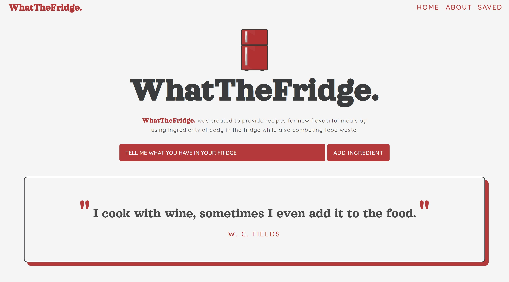
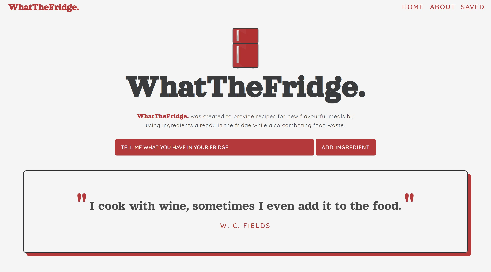

A collaboration by Jessica Dittrich & William Liao & Mubashera Mashraka & Taylor Moss
Team member William had a predicament where he had salmon in his fridge and wanted to make something new and flavourful but didn't know where to start. By creating this application, him and many others can input their ingredients and have recipes picked out that they can use to make something new.
In addition to this, eco conscious individuals can also input their fridge contents and find recipes that allow them to use up these selected ingredients at the peak of their life. This can be seen as an application that combats food waste.
 
